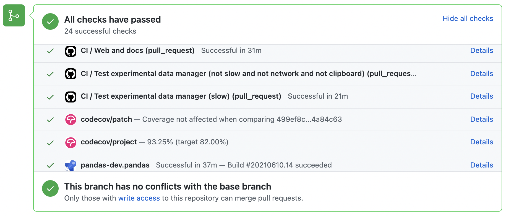

贡献代码库#
代码标准#
编写良好的代码不仅关乎你写了什么。它还关乎你*如何*编写。在持续集成测试期间，将运行多个工具来检查你的代码是否存在样式错误。产生任何警告都将导致测试失败。因此，良好的风格是向 pandas 提交代码的要求。
pandas 中有几个工具可以帮助贡献者在向项目贡献之前验证其更改
./ci/code_checks.sh: 一个脚本用于验证文档测试（doctests）、文档字符串格式和导入的模块。可以使用参数docstrings、code和doctests独立运行检查（例如./ci/code_checks.sh doctests）；pre-commit，我们将在下一节详细介绍。
此外，由于很多人使用我们的库，重要的是我们不要对代码进行突然更改，这可能导致大量用户代码中断，也就是说，我们需要它尽可能*向后兼容*，以避免大规模中断。
Pre-commit#
此外，持续集成将使用 pre-commit 钩子运行代码格式检查，如 black、ruff、isort 和 clang-format 等。这些检查产生的任何警告都将导致持续集成失败；因此，在提交代码之前自行运行检查会很有帮助。这可以通过安装 pre-commit（如果你已按照设置开发环境中的说明操作，这应该已经完成）然后运行
pre-commit install
从 pandas 仓库的根目录。现在，每次提交更改时都会运行所有样式检查，而无需你手动运行每一个。此外，使用 pre-commit 还可以让你更容易地与我们不断变化的代码检查保持同步。
请注意，如果需要，你可以使用 git commit --no-verify 跳过这些检查。
如果你不想在工作流程中使用 pre-commit，你仍然可以使用它来运行其检查，方法如下之一：
pre-commit run --files <files you have modified>
pre-commit run --from-ref=upstream/main --to-ref=HEAD --all-files
无需事先执行 pre-commit install。
最后，我们还有一些慢速的 pre-commit 检查，它们不会在每次提交时运行，但会在持续集成期间运行。你可以通过以下方式手动触发它们：
pre-commit run --hook-stage manual --all-files
注意
你可能希望定期运行 pre-commit gc，以清理不再使用的仓库。
注意
如果你的 virtualenv 安装冲突，则可能会出现错误——请参阅此处。
此外，由于virtualenv 中的一个 bug，如果你使用 conda，可能会遇到问题。要解决此问题，你可以将 virtualenv 降级到版本 20.0.33。
注意
如果你最近从上游分支合并了 main，则 pre-commit 使用的一些依赖项可能已更改。请确保更新你的开发环境。
可选依赖#
可选依赖项（例如 matplotlib）应使用私有辅助函数 pandas.compat._optional.import_optional_dependency 导入。这确保了当依赖项未满足时，会有一致的错误消息。
所有使用可选依赖项的方法都应包含一个测试，断言当找不到可选依赖项时会引发 ImportError。如果该库存在，则应跳过此测试。
所有可选依赖项都应在可选依赖项中进行文档化，并且最小所需版本应在 pandas.compat._optional.VERSIONS 字典中设置。
向后兼容性#
请尽量保持向后兼容性。pandas 有很多用户和大量的现有代码，所以如果可能，请不要破坏它们。如果你认为需要破坏，请在拉取请求中清楚说明原因。此外，更改方法签名时要小心，并在需要时添加弃用警告。同时，将 deprecated sphinx 指令添加到已弃用的函数或方法中。
如果存在与被弃用函数具有相同参数的函数，你可以使用 pandas.util._decorators.deprecate
from pandas.util._decorators import deprecate
deprecate('old_func', 'new_func', '1.1.0')
否则，你需要手动完成
import warnings
from pandas.util._exceptions import find_stack_level
def old_func():
"""Summary of the function.
.. deprecated:: 1.1.0
Use new_func instead.
"""
warnings.warn(
'Use new_func instead.',
FutureWarning,
stacklevel=find_stack_level(),
)
new_func()
def new_func():
pass
你还需要
编写一个新测试，断言在调用弃用参数时会发出警告
更新所有 pandas 现有测试和代码以使用新参数
更多信息请参阅测试警告。
类型提示#
pandas 强烈鼓励使用PEP 484 风格的类型提示。新的开发应该包含类型提示，并且接受对现有代码进行标注的拉取请求！
风格指南#
类型导入应遵循 from typing import ... 约定。你的代码可能会被 pre-commit 检查自动重写以使用一些现代结构（例如使用内置的 list 而不是 typing.List）。
在代码库中，有些情况下类可能会定义遮蔽内置类型的类变量。这会导致 Mypy 1775 中描述的问题。这里的防御性解决方案是创建内置类型的一个明确别名，并在你的注解中使用它。例如，如果你遇到以下定义：
class SomeClass1:
str = None
正确的注解方式如下：
str_type = str
class SomeClass2:
str: str_type = None
在某些情况下，当你知道分析器无法更好地理解时，你可能会倾向于使用 typing 模块中的 cast。这在使用自定义推理函数时尤其常见。例如：
from typing import cast
from pandas.core.dtypes.common import is_number
def cannot_infer_bad(obj: Union[str, int, float]):
if is_number(obj):
...
else: # Reasonably only str objects would reach this but...
obj = cast(str, obj) # Mypy complains without this!
return obj.upper()
这里的限制是，虽然人类可以合理地理解 is_number 会捕获 int 和 float 类型，但 mypy 尚无法做出相同的推理（参见 mypy #5206）。虽然上述方法有效，但**强烈不鼓励**使用 cast。在适用情况下，重构代码以适应静态分析是更可取的：
def cannot_infer_good(obj: Union[str, int, float]):
if isinstance(obj, str):
return obj.upper()
else:
...
对于自定义类型和推理，这并非总是可能，因此会做出例外，但应尽一切努力避免使用 cast。
pandas 特定类型#
pandas 特定的常用类型将出现在 pandas._typing 中，你应该在适用情况下使用它们。此模块目前是私有的，但最终应将其公开给希望对 pandas 进行类型检查的第三方库。
例如，pandas 中有相当多的函数接受 dtype 参数。这可以表示为字符串，如 "object"，一个 numpy.dtype，如 np.int64，甚至是一个 pandas ExtensionDtype，如 pd.CategoricalDtype。与其让用户不得不持续标注所有这些选项，不如简单地从 pandas._typing 模块导入并重用它：
from pandas._typing import Dtype
def as_type(dtype: Dtype) -> ...:
...
此模块最终将包含“路径类”、“数组类”、“数字”等重复使用的概念的类型……并且还可以保存常用参数（如 axis）的别名。此模块正在积极开发中，因此请务必参考源代码以获取最新可用的类型列表。
验证类型提示#
pandas 使用 mypy 和 pyright 对代码库和类型提示进行静态分析。在进行任何更改后，你可以通过运行以下命令来确保类型提示一致：
pre-commit run --hook-stage manual --all-files mypy
pre-commit run --hook-stage manual --all-files pyright
pre-commit run --hook-stage manual --all-files pyright_reportGeneralTypeIssues
# the following might fail if the installed pandas version does not correspond to your local git version
pre-commit run --hook-stage manual --all-files stubtest
在你的 python 环境中。
警告
请注意，上述命令将使用当前的 python 环境。如果你的 python 包比 pandas CI 安装的更旧/更新，上述命令可能会失败。这通常发生在
mypy或numpy版本不匹配时。请参阅如何设置 python 环境或选择一个最近成功的流程，选择“Docstring validation, typing, and other manual pre-commit hooks”任务，然后点击“Set up Conda”和“Environment info”以查看 pandas CI 安装了哪些版本。
在使用 pandas 的代码中测试类型提示#
警告
Pandas 尚未成为 py.typed 库（PEP 561）！在本地将 pandas 声明为 py.typed 库的主要目的是测试和改进 pandas 内置的类型注解。
在 pandas 成为 py.typed 库之前，可以通过在 pandas 安装文件夹中创建一个名为“py.typed”的空文件来轻松试用 pandas 附带的类型注解。
python -c "import pandas; import pathlib; (pathlib.Path(pandas.__path__[0]) / 'py.typed').touch()"
py.typed 文件的存在向类型检查器发出信号，表明 pandas 已经是一个 py.typed 库。这使得类型检查器能够识别 pandas 附带的类型注解。
使用持续集成进行测试#
一旦你的拉取请求提交，pandas 测试套件将自动在 GitHub Actions 持续集成服务上运行。但是，如果你希望在提交拉取请求之前在分支上运行测试套件，则需要将持续集成服务连接到你的 GitHub 仓库。GitHub Actions 的说明在此处。
当你的构建全部“绿色”时，拉取请求将被考虑合并。如果任何测试失败，你将看到一个红色的“X”，你可以点击查看单个失败的测试。这是一个绿色构建的示例。
测试驱动开发#
pandas 非常重视测试，并强烈鼓励贡献者采纳测试驱动开发（TDD）。这个开发过程“依赖于一个非常短的开发周期的重复：首先开发者编写一个（最初会失败的）自动化测试用例，定义所需的改进或新功能，然后生成最少的代码以通过该测试。”所以，在实际编写任何代码之前，你应该先编写测试。测试通常可以从原始的 GitHub Issue 中获取。但是，始终值得考虑额外的用例并编写相应的测试。
在代码推送到 pandas 后，最常见的请求之一就是添加测试。因此，养成提前编写测试的习惯是很值得的，这样就永远不会成为问题。
编写测试#
所有测试都应放在特定包的 tests 子目录中。此文件夹包含许多当前的测试示例，我们建议你参考这些示例以获取灵感。
作为一般提示，你可以在集成开发环境（IDE）中使用搜索功能，或在终端中使用 git grep 命令来查找调用该方法的测试文件。如果你不确定放置测试的最佳位置，可以先猜测一下，但请注意，审阅者可能会要求你将测试移动到其他位置。
要使用 git grep，你可以在终端中运行以下命令：
git grep "function_name("
这将在你的仓库中搜索文本 function_name( 的所有文件。这是一种快速定位代码库中函数并确定为其添加测试的最佳位置的有用方法。
理想情况下，一个测试应该只有一个显而易见的位置。在达到这个理想之前，以下是一些关于测试应放在哪里的经验法则。
你的测试是否仅依赖于
pd._libs.tslibs中的代码？此测试可能属于以下之一：tests.tslibs
注意
tests.tslibs中的任何文件都不应从pd._libs.tslibs之外的任何 pandas 模块导入。tests.scalar
tests.tseries.offsets
你的测试是否只依赖于 pd._libs 中的代码？这个测试可能属于以下之一：
tests.libs
tests.groupby.test_libgroupby
你的测试是针对算术或比较方法吗？此测试可能属于以下之一：
tests.arithmetic
注意
这些旨在用于使用
box_with_arrayfixture 测试 DataFrame/Series/Index/ExtensionArray 行为的共享测试。tests.frame.test_arithmetic
tests.series.test_arithmetic
你的测试是针对归约方法（min, max, sum, prod, …）吗？此测试可能属于以下之一：
tests.reductions
注意
这些旨在用于测试 DataFrame/Series/Index/ExtensionArray 行为的共享测试。
tests.frame.test_reductions
tests.series.test_reductions
tests.test_nanops
你的测试是针对索引方法吗？这是决定测试归属位置最困难的情况，因为有许多这样的测试，并且其中许多测试不止一个方法（例如
Series.__getitem__和Series.loc.__getitem__）此测试是否专门测试 Index 方法（例如
Index.get_loc,Index.get_indexer）？此测试可能属于以下之一：tests.indexes.test_indexing
tests.indexes.fooindex.test_indexing
在这些文件内应有一个针对特定方法的测试类，例如
TestGetLoc。在大多数情况下，这些测试中不应需要
Series或DataFrame对象。该测试是否针对
__getitem__或__setitem__之外的 Series 或 DataFrame 索引方法，例如xs、where、take、mask、lookup或insert？此测试可能属于以下之一：tests.frame.indexing.test_methodname
tests.series.indexing.test_methodname
此测试是否针对
loc、iloc、at或iat中的任何一个？此测试可能属于以下之一：tests.indexing.test_loc
tests.indexing.test_iloc
tests.indexing.test_at
tests.indexing.test_iat
在相应文件中，测试类对应于索引器类型（例如
TestLocBooleanMask）或主要用例（例如TestLocSetitemWithExpansion）。有关测试多个索引方法的测试，请参阅 D) 部分中的注释。
该测试是否针对
Series.__getitem__、Series.__setitem__、DataFrame.__getitem__或DataFrame.__setitem__？此测试可能属于以下之一：tests.series.test_getitem
tests.series.test_setitem
tests.frame.test_getitem
tests.frame.test_setitem
在许多情况下，此类测试可能会测试多个相似的方法，例如
import pandas as pd import pandas._testing as tm def test_getitem_listlike_of_ints(): ser = pd.Series(range(5)) result = ser[[3, 4]] expected = pd.Series([2, 3]) tm.assert_series_equal(result, expected) result = ser.loc[[3, 4]] tm.assert_series_equal(result, expected)
在这种情况下，测试位置应基于正在测试的*底层*方法。或者在错误修复测试的情况下，基于实际错误的发生位置。因此在此示例中，我们知道
Series.__getitem__调用Series.loc.__getitem__，所以这*实际上*是对loc.__getitem__的测试。因此此测试属于tests.indexing.test_loc。你的测试是针对 DataFrame 或 Series 方法吗？
该方法是绘图方法吗？此测试可能属于以下之一：
tests.plotting
该方法是 I/O 方法吗？此测试可能属于以下之一：
tests.io
注意
这包括
to_string，但不包括__repr__，后者在tests.frame.test_repr和tests.series.test_repr中测试。其他类通常有test_formats文件。
否则，此测试可能属于以下之一：
tests.series.methods.test_mymethod
tests.frame.methods.test_mymethod
注意
如果一个测试可以使用
frame_or_seriesfixture 在 DataFrame/Series 之间共享，按照惯例，它应放在tests.frame文件中。
你的测试是针对 Index 方法，不依赖于 Series/DataFrame 吗？此测试可能属于以下之一：
tests.indexes
你的测试是否针对 pandas 提供的 ExtensionArrays（
Categorical、DatetimeArray、TimedeltaArray、PeriodArray、IntervalArray、NumpyExtensionArray、FloatArray、BoolArray、StringArray）？此测试可能属于以下之一：tests.arrays
你的测试是否针对*所有* ExtensionArray 子类（即“EA 接口”）？此测试可能属于以下之一：
tests.extension
使用 pytest#
测试结构#
pandas 现有的测试结构*大多*是基于类的，这意味着你通常会发现测试被封装在一个类中。
class TestReallyCoolFeature:
def test_cool_feature_aspect(self):
pass
我们更倾向于使用 pytest 框架的*函数式*风格，它提供了更丰富的测试框架，这将有助于测试和开发。因此，我们将编写测试函数，而不是编写测试类，如下所示：
def test_really_cool_feature():
pass
首选的 pytest 惯用法#
函数式测试命名为
def test_*，并且*只*接受 fixture 或参数作为参数。对于测试标量和真值测试，使用裸露的
assert使用
tm.assert_series_equal(result, expected)和tm.assert_frame_equal(result, expected)分别比较Series和DataFrame的结果。测试多个用例时使用 @pytest.mark.parametrize。
当测试用例预期会失败时，使用 pytest.mark.xfail。
当测试用例永远不会通过时，使用 pytest.mark.skip。
当测试用例需要特定标记时，使用 pytest.param。
如果多个测试可以共享一个设置对象，使用 @pytest.fixture。
警告
不要使用 pytest.xfail（它与 pytest.mark.xfail 不同），因为它会立即停止测试，并且不检查测试是否会失败。如果你希望实现这种行为，请改用 pytest.skip。
如果已知测试会失败但失败方式不应被捕获，请使用 pytest.mark.xfail。通常用于测试表现出bug行为或未实现功能的情况。如果失败的测试具有不稳定的行为，请使用参数 strict=False。这将使 pytest 在测试意外通过时不会失败。使用 strict=False 非常不理想，请仅作为最后手段使用。
优先使用装饰器 @pytest.mark.xfail 和参数 pytest.param，而不是在测试内部使用，以便在 pytest 的收集阶段正确标记测试。对于涉及多个参数、fixture 或这些组合的测试，只能在测试阶段进行 xfail。为此，请使用 request fixture：
def test_xfail(request):
mark = pytest.mark.xfail(raises=TypeError, reason="Indicate why here")
request.applymarker(mark)
xfail 不应用于涉及因无效用户参数而失败的测试。对于这些测试，我们需要使用 pytest.raises 验证是否抛出了正确的异常类型和错误消息。
测试警告#
使用 tm.assert_produces_warning 作为上下文管理器，以检查代码块是否引发警告。
with tm.assert_produces_warning(DeprecationWarning):
pd.deprecated_function()
如果某个代码块中不应出现警告，请将 False 传递给上下文管理器。
with tm.assert_produces_warning(False):
pd.no_warning_function()
如果你有一个会发出警告的测试，但你实际上并不是在测试警告本身（例如因为它将来会被移除，或者因为我们正在匹配第三方库的行为），那么请使用 pytest.mark.filterwarnings 来忽略该错误。
@pytest.mark.filterwarnings("ignore:msg:category")
def test_thing(self):
pass
测试异常#
使用 pytest.raises 作为上下文管理器，指定具体的异常子类（即绝不使用 Exception），并在 match 中指定异常消息。
with pytest.raises(ValueError, match="an error"):
raise ValueError("an error")
涉及文件的测试#
tm.ensure_clean 上下文管理器创建一个用于测试的临时文件，带有生成的文件名（如果提供则使用你指定的文件名），当上下文块退出时会自动删除。
with tm.ensure_clean('my_file_path') as path:
# do something with the path
涉及网络连接的测试#
单元测试不应通过互联网访问公共数据集，因为网络连接不稳定且无法拥有所连接的服务器。为了模拟这种交互，请使用 pytest-localserver 插件中的 httpserver fixture 配合合成数据。
@pytest.mark.network
@pytest.mark.single_cpu
def test_network(httpserver):
httpserver.serve_content(content="content")
result = pd.read_html(httpserver.url)
示例#
这是一个自包含测试集在文件 pandas/tests/test_cool_feature.py 中的示例，它展示了我们喜欢使用的多个功能。请记住在新的测试中添加 GitHub Issue 编号作为注释。
import pytest
import numpy as np
import pandas as pd
@pytest.mark.parametrize('dtype', ['int8', 'int16', 'int32', 'int64'])
def test_dtypes(dtype):
assert str(np.dtype(dtype)) == dtype
@pytest.mark.parametrize(
'dtype', ['float32', pytest.param('int16', marks=pytest.mark.skip),
pytest.param('int32', marks=pytest.mark.xfail(
reason='to show how it works'))])
def test_mark(dtype):
assert str(np.dtype(dtype)) == 'float32'
@pytest.fixture
def series():
return pd.Series([1, 2, 3])
@pytest.fixture(params=['int8', 'int16', 'int32', 'int64'])
def dtype(request):
return request.param
def test_series(series, dtype):
# GH <issue_number>
result = series.astype(dtype)
assert result.dtype == dtype
expected = pd.Series([1, 2, 3], dtype=dtype)
tm.assert_series_equal(result, expected)
运行此测试会产生
((pandas) bash-3.2$ pytest test_cool_feature.py -v
=========================== test session starts ===========================
platform darwin -- Python 3.6.2, pytest-3.6.0, py-1.4.31, pluggy-0.4.0
collected 11 items
tester.py::test_dtypes[int8] PASSED
tester.py::test_dtypes[int16] PASSED
tester.py::test_dtypes[int32] PASSED
tester.py::test_dtypes[int64] PASSED
tester.py::test_mark[float32] PASSED
tester.py::test_mark[int16] SKIPPED
tester.py::test_mark[int32] xfail
tester.py::test_series[int8] PASSED
tester.py::test_series[int16] PASSED
tester.py::test_series[int32] PASSED
tester.py::test_series[int64] PASSED
我们已 parametrized 的测试现在可通过测试名称访问，例如，我们可以使用 -k int8 运行这些测试，以*仅*选择匹配 int8 的测试。
((pandas) bash-3.2$ pytest test_cool_feature.py -v -k int8
=========================== test session starts ===========================
platform darwin -- Python 3.6.2, pytest-3.6.0, py-1.4.31, pluggy-0.4.0
collected 11 items
test_cool_feature.py::test_dtypes[int8] PASSED
test_cool_feature.py::test_series[int8] PASSED
使用 hypothesis#
Hypothesis 是一个用于基于属性测试的库。你无需明确地参数化测试，而是可以描述*所有*有效的输入，然后让 Hypothesis 尝试找到失败的输入。更棒的是，无论它尝试了多少随机示例，Hypothesis 总是会报告一个单一的、最小的反例来验证你的断言——这通常是一个你从未想过要测试的例子。
有关更多介绍，请参阅Hypothesis 入门，然后参考 Hypothesis 文档了解详细信息。
import json
from hypothesis import given, strategies as st
any_json_value = st.deferred(lambda: st.one_of(
st.none(), st.booleans(), st.floats(allow_nan=False), st.text(),
st.lists(any_json_value), st.dictionaries(st.text(), any_json_value)
))
@given(value=any_json_value)
def test_json_roundtrip(value):
result = json.loads(json.dumps(value))
assert value == result
这个测试展示了 Hypothesis 的几个有用功能，并演示了一个很好的用例：检查应该在大量或复杂输入域中成立的属性。
为了保持 pandas 测试套件运行快速，如果输入或逻辑简单，则首选参数化测试，而 Hypothesis 测试则保留用于逻辑复杂或有太多选项组合或微妙交互需要测试（或考虑！）所有这些情况。
运行测试套件#
然后，你可以直接在 Git 克隆中运行测试（无需安装 pandas），方法是输入：
pytest pandas
注意
如果少数测试未通过，这可能不是你的 pandas 安装问题。某些测试（例如某些 SQLAlchemy 测试）需要额外设置，其他测试可能因为非固定库发布新版本而开始失败，还有一些测试在并行运行时可能会不稳定。只要你能从本地构建的版本中导入 pandas，你的安装可能就没问题，你可以开始贡献了！
通常，在运行整个测试套件之前，只运行你更改周围的测试子集是值得的（提示：你可以使用pandas-coverage 应用程序）来找出哪些测试触及了你修改的代码行，然后只运行这些测试）。
最简单的方法是
pytest pandas/path/to/test.py -k regex_matching_test_name
或者使用以下构造之一：
pytest pandas/tests/[test-module].py
pytest pandas/tests/[test-module].py::[TestClass]
pytest pandas/tests/[test-module].py::[TestClass]::[test_method]
使用 pytest-xdist（包含在我们的 'pandas-dev' 环境中），可以加快多核机器上的本地测试速度。-n 数字标志可以在运行 pytest 时指定，以根据指定的核数或自动利用机器上所有可用核来并行化测试运行。
# Utilize 4 cores
pytest -n 4 pandas
# Utilizes all available cores
pytest -n auto pandas
如果你想进一步加快速度，更高级的命令用法如下：
pytest pandas -n 4 -m "not slow and not network and not db and not single_cpu" -r sxX
除了多线程性能提升外，它还通过使用 -m 标记跳过一些测试来提高测试速度：
slow：任何耗时长的测试（以秒计而非毫秒）
network：需要网络连接的测试
db：需要数据库（mysql 或 postgres）的测试
single_cpu：只能在单核 CPU 上运行的测试
如果与你相关，你可能需要启用以下选项：
arm_slow：在 arm64 架构上耗时长的测试
这些标记在此 toml 文件中定义，位于 [tool.pytest.ini_options] 下名为 markers 的列表中，以防你想要检查是否有新的、你感兴趣的标记。
-r 报告标志将显示简短摘要信息（参阅pytest 文档）。此处我们显示以下项的数量：
s: 跳过的测试
x: xfailed 测试
X: xpassed 测试
摘要是可选的，如果你不需要附加信息，可以将其删除。使用并行化选项可以显著减少在提交拉取请求之前本地运行测试所需的时间。
如果结果需要帮助，这在过去曾发生过，请在运行命令并打开错误报告之前设置一个种子，这样我们就可以重现它。以下是在 Windows 上设置种子的示例：
set PYTHONHASHSEED=314159265
pytest pandas -n 4 -m "not slow and not network and not db and not single_cpu" -r sxX
在 Unix 上使用：
export PYTHONHASHSEED=314159265
pytest pandas -n 4 -m "not slow and not network and not db and not single_cpu" -r sxX
更多信息请参阅 pytest 文档。
此外，可以运行
pd.test()
导入 pandas 即可类似地运行测试。
运行性能测试套件#
性能至关重要，值得考虑你的代码是否引入了性能退步。pandas 正在迁移到 asv benchmarks，以便轻松监控关键 pandas 操作的性能。这些基准测试都位于 pandas/asv_bench 目录中，测试结果可以在这里找到。
要使用 asv 的所有功能，你需要 conda 或 virtualenv。有关更多详细信息，请查看 asv 安装网页。
安装 asv：
pip install git+https://github.com/airspeed-velocity/asv
如果你需要运行基准测试，请将目录更改为 asv_bench/ 并运行：
asv continuous -f 1.1 upstream/main HEAD
你可以将 HEAD 替换为你正在处理的分支的名称，并报告更改超过 10% 的基准测试。该命令默认使用 conda 创建基准测试环境。如果你想改用 virtualenv，请写：
asv continuous -f 1.1 -E virtualenv upstream/main HEAD
选项 -E virtualenv 应该添加到所有运行基准测试的 asv 命令中。默认值定义在 asv.conf.json 中。
运行完整的基准测试套件可能是一个耗时一整天的过程，这取决于你的硬件及其资源利用率。然而，通常只需将部分结果粘贴到拉取请求中，以表明提交的更改不会导致意外的性能回归。你可以使用 -b 标志运行特定的基准测试，该标志接受正则表达式。例如，这只会运行 pandas/asv_bench/benchmarks/groupby.py 文件中的基准测试：
asv continuous -f 1.1 upstream/main HEAD -b ^groupby
如果你只想运行文件中特定组的基准测试，可以使用 . 作为分隔符。例如：
asv continuous -f 1.1 upstream/main HEAD -b groupby.GroupByMethods
将只运行 groupby.py 中定义的 GroupByMethods 基准测试。
你还可以使用当前 Python 环境中已安装的 pandas 版本运行基准测试。如果你没有 virtualenv 或 conda，或者正在使用上面讨论的 setup.py develop 方法，这会很有用；对于就地构建，你需要设置 PYTHONPATH，例如 PYTHONPATH="$PWD/.." asv [remaining arguments]。你可以通过以下方式运行基准测试：
asv run -e -E existing
或者，要使用特定的 Python 解释器：
asv run -e -E existing:python3.6
这将显示基准测试的 stderr 输出，并使用你的 $PATH 中本地的 python。
有关如何编写基准测试以及如何使用 asv 的信息，请参阅 asv 文档。
为代码编写文档#
更改应反映在 doc/source/whatsnew/vx.y.z.rst 中的发布说明中。此文件包含每个版本的持续更改日志。在此文件中添加一个条目以记录你的修复、增强或（不可避免的）破坏性更改。添加条目时，请务必包含 GitHub issue 编号（使用 :issue:`1234`，其中 1234 是 issue/拉取请求编号）。你的条目应使用完整的句子和正确的语法编写。
提及 API 部分时，请酌情使用 Sphinx 的 :func:、:meth: 或 :class: 指令。并非所有公共 API 函数和方法都有文档页面；理想情况下，只有在链接能解析时才添加。你通常可以通过查看先前版本的发布说明来找到类似的示例。
如果你的代码是 bug 修复，请将你的条目添加到相关的 bug 修复部分。避免添加到 Other 部分；只有在极少数情况下才应将条目放在那里。尽可能简洁地描述 bug，应包括用户可能如何遇到它以及 bug 本身（例如“产生不正确的结果”或“错误地引发”）。可能还需要指出新的行为。
如果你的代码是增强功能，则很可能需要在现有文档中添加用法示例。这可以按照文档部分进行。此外，为了让用户知道此功能何时添加，使用了 versionadded 指令。其 sphinx 语法是：
.. versionadded:: 2.1.0
这将在你放置 Sphinx 指令的地方显示文本 *版本 2.1.0 中的新功能*。在添加新函数或方法（示例）或新关键字参数（示例）时，这也应放在文档字符串中。